등장인물
융판 위에서 움직일 친구들이에요. 해설 1명과 함께 이야기를 들려주세요.
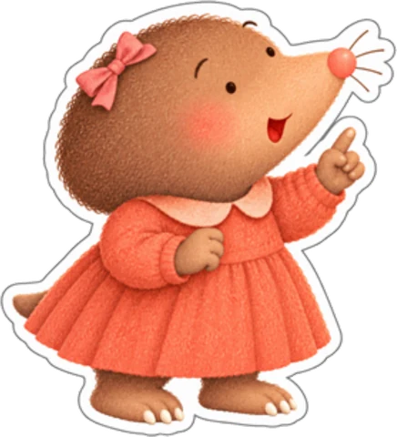
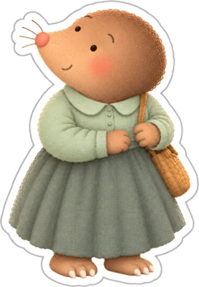
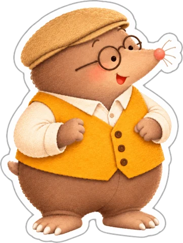
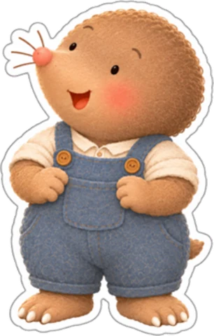
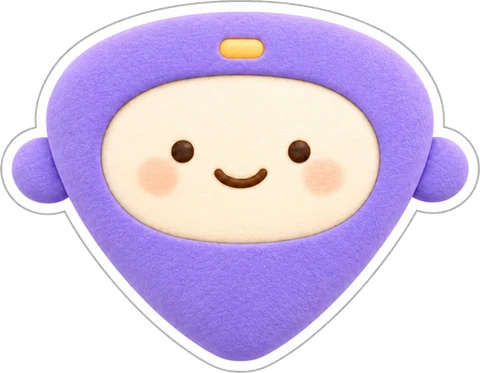
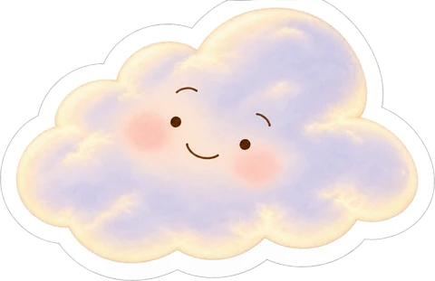
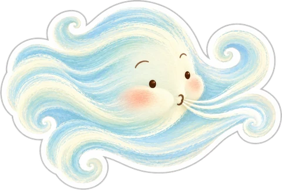
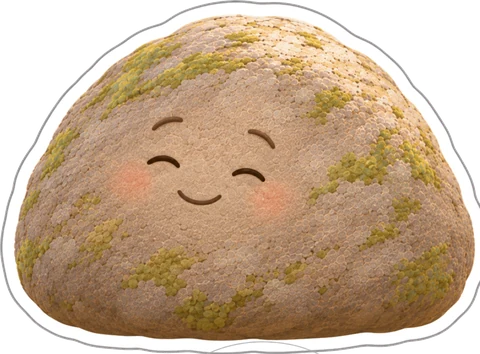
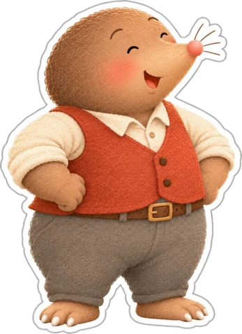
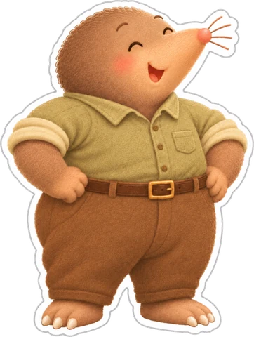
융판 자료 인쇄
등장인물 그림 3장이에요. 인쇄해서 오려 융판에 붙여 쓰세요.
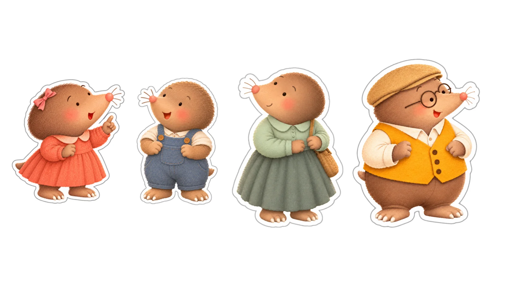
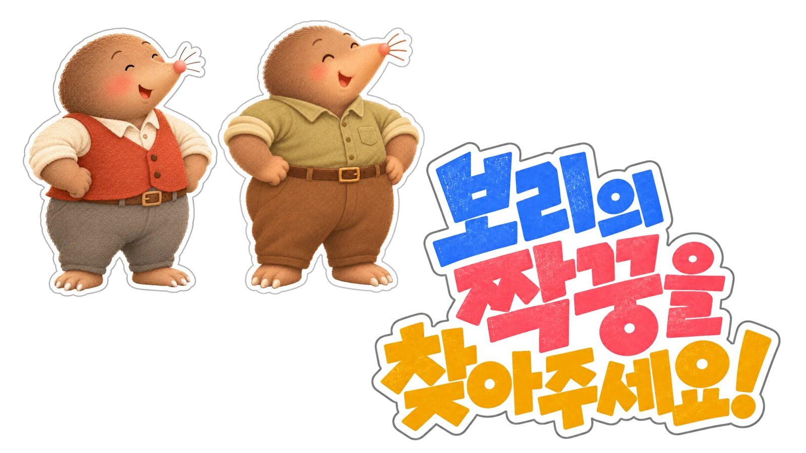
만들기 도움말
- 인쇄 설정에서 용지 A4 · 가로 · 크기 100%(실제 크기)로 맞춰요. 두꺼운 종이에 뽑으면 더 튼튼해요.
- 코팅한 뒤 그림 둘레의 회색 선을 따라 오려요.
- 뒷면에 까슬이(벨크로)를 붙이면 융판에 잘 붙어요.
동극 진행 카드
대사 순서대로 넘겨 보세요. 얼굴 옆은 대사, 회색 글씨는 동작 안내예요. 태블릿으로 보면서 진행해도 좋아요.
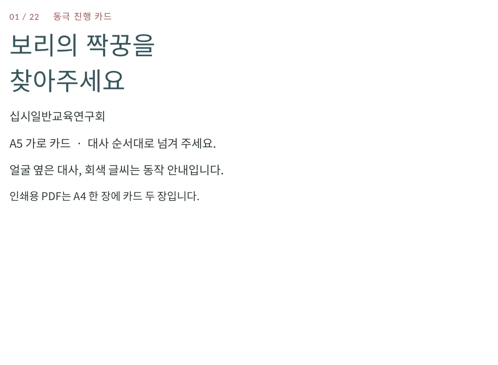
1 / 22
A4 한 장에 카드 두 장이 들어 있어요. 가운데 점선을 따라 자르면 A5 카드가 돼요.